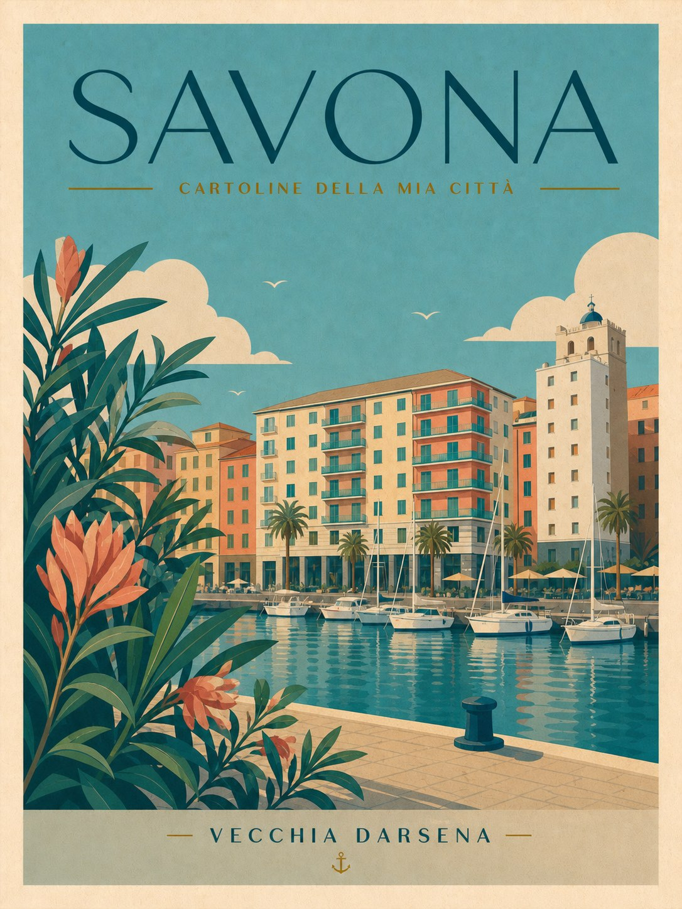
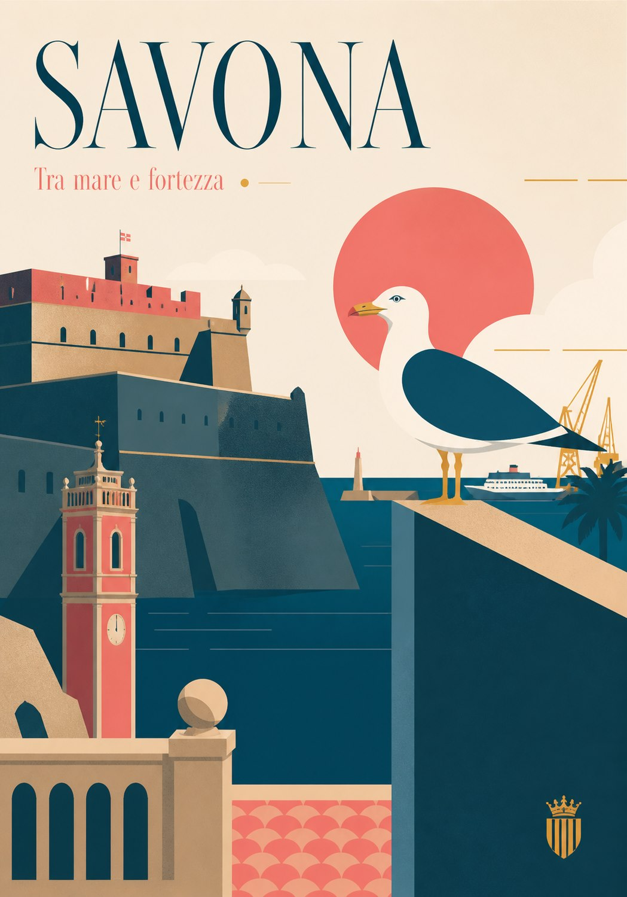
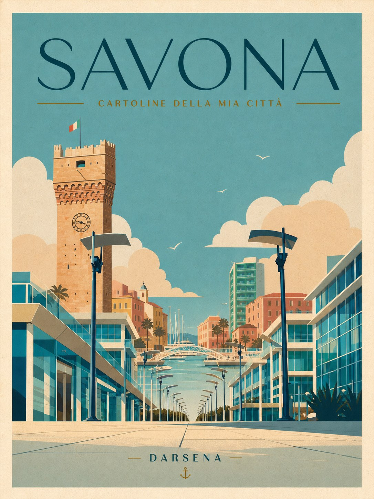
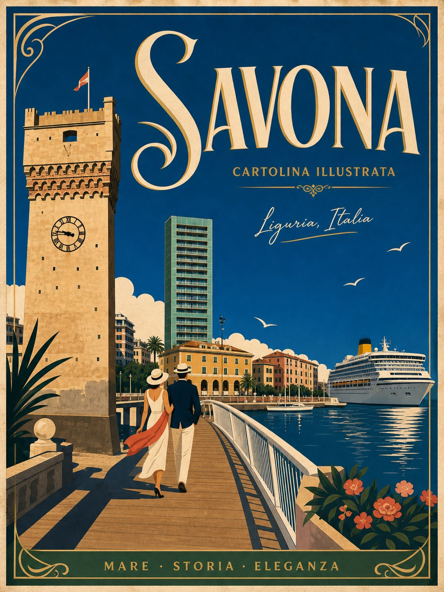
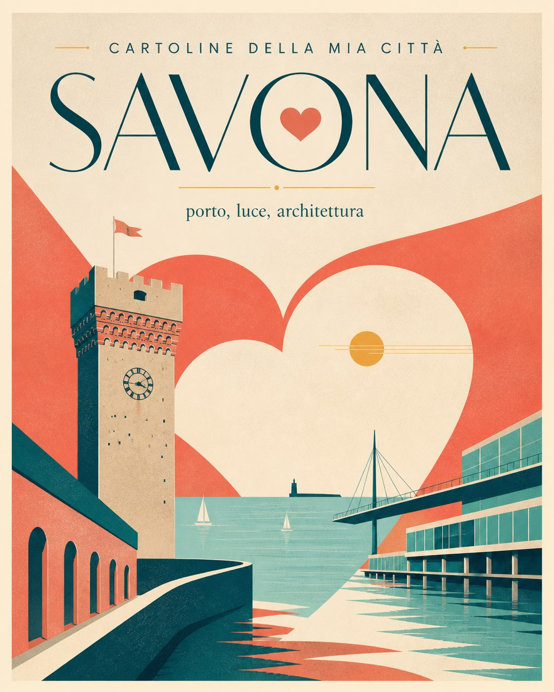
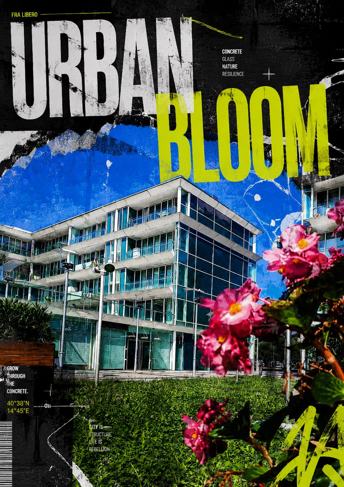

Valorizzazione del territorio
Visual e materiali coordinati per raccontare luoghi, percorsi, attività locali ed esperienze del territorio.

Il lavoro
Valorizzare un territorio significa trasformare luoghi, tradizioni, servizi e percorsi in una narrazione visiva chiara e riconoscibile.
- Identità visiva per iniziative locali, borghi, percorsi ed eventi territoriali.
- Mappe, infografiche, segnaletica leggera e materiali promozionali.
- Contenuti social e visual pensati per turismo, cultura, attività locali e comunità.
- Racconto visivo coerente tra stampa, digitale e comunicazione sul posto.
Il risultato è una comunicazione capace di rendere il territorio più accessibile, attrattivo e memorabile per chi lo vive o lo visita.
Lavori caricati
Cartoline e visual pensati per rendere Savona più riconoscibile attraverso simboli, scorci, colori e atmosfera.





